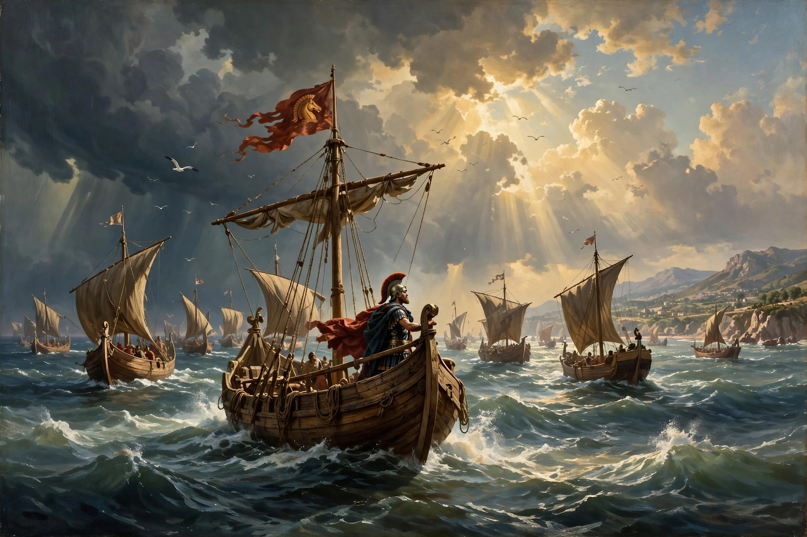

| Parents | Anchises and Aphrodite (Venus) |
|---|---|
| Spouses | Creusa; Lavinia |
| Children | Ascanius (Iulus), Silvius |
| Known for | Trojan hero; legendary founder of the Roman people |

Aeneas (Greek: Αἰνείας) was a Trojan hero, the son of the prince Anchises and the goddess Aphrodite. He appears in Homer's Iliad as a leading warrior and Hector's principal lieutenant, and becomes in Roman tradition the ancestor of Romulus and Remus and of the Julian line. He is the hero of Virgil's epic poem the Aeneid.
In the Iliad Aeneas is repeatedly rescued by gods — by Aphrodite and Apollo from Diomedes, and by Poseidon from Achilles — because it is fated that he and his descendants will rule the Trojans. The fifth Homeric Hymn to Aphrodite tells of his conception on Mount Ida.
Virgil's Aeneas escapes the sack of Troy carrying his father and the household gods, loses his wife Creusa, and wanders the Mediterranean for seven years. Storm-driven to Carthage, he loves and abandons Queen Dido; after his father's death in Sicily he descends to the underworld, then lands in Latium, marries Lavinia, daughter of King Latinus, and defeats the Rutulian prince Turnus in single combat. His defining virtue is pietas — dutiful devotion to gods, family and destiny.
Through his son Ascanius, called Iulus, Aeneas became the claimed ancestor of the gens Julia, hence of Julius Caesar and Augustus, whose regime Virgil's poem served. Medieval Britain also adopted him: Geoffrey of Monmouth made his great-grandson Brutus the first king of Britain.
See also: Anchises · Homeric Hymns · Paris